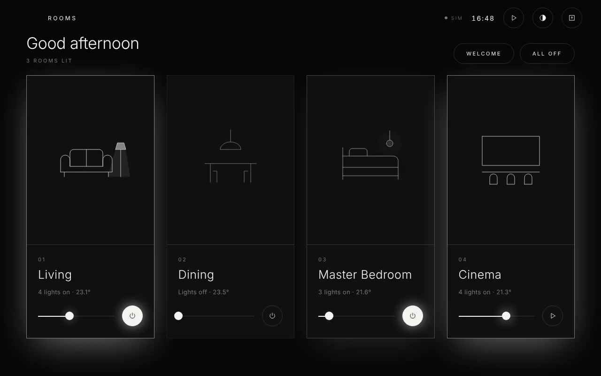
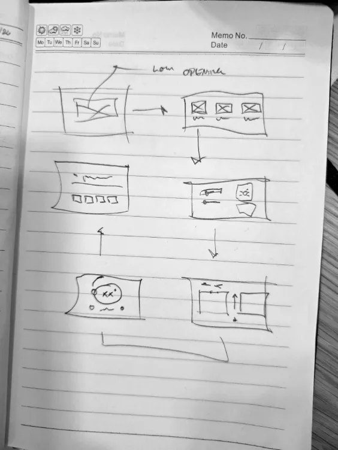
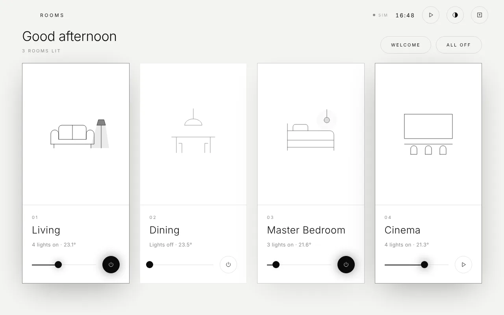
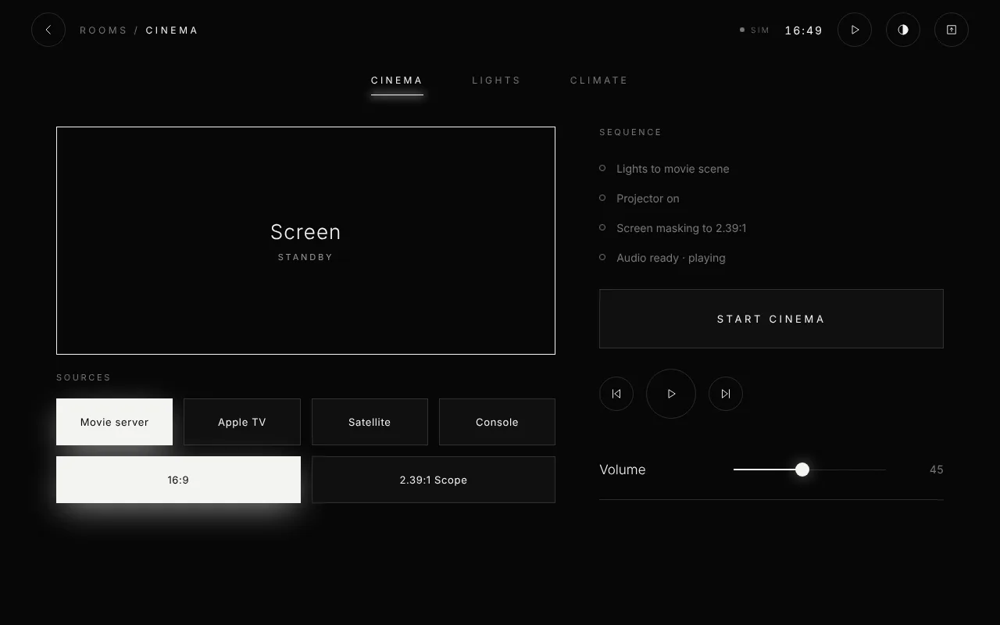

challenge 04 / 2026 / crestron ch5
The Showroom
sketch → gui, one afternoonA Crestron CH5 touch-panel mockup that started as six boxes in a notebook. A photo, a short brief to an AI collaborator, then six passes of looking and changing it together — a working panel the same afternoon.
- platform
- crestron ch5
- stack
- html / css / js
- started as
- a notebook sketch
- passes
- v1.0 → v1.7
Challenge
[01]An idea on paper is weeks an afternoon from something you can touch.
A panel idea usually goes sketch, then mockups, then a build, then a panel on a bench — weeks before anyone taps it. The early ideas get the least testing, because they are the slowest to see.
So: go from pen on paper to a working CH5 panel in one sitting, and spend the time on the decisions instead of the typing. The sketch and the calls are mine; an AI collaborator does the fast first build.
Sketch → GUI
[02]drag across: the notebook on one side, the panel it became on the other.
Try it
[03]the actual panel, running in your browser. tap a room, or let it give you the tour.
The refinement
[04]six passes of looking at it together and changing it together. what was said → what changed.
“Is this intentional?”
The card outline now fades with the lights — a room that is off looks off.
“Controls in the cards.”
Dim and switch a room without entering it: a master dimmer and a power button on every card.
“The icons draw themselves. Nice touch.”
Kept — and now on every entry, not just the first.
“Simulate a live tour.”
A guided demo built into the panel: a ghost finger taps and drags through it, and loops until you touch the screen.
How it is built
[05]Plain web tech
Hand-written HTML, CSS and JavaScript. No framework, no build step — rooms, scenes and sources are plain lists at the top of one file.
SOURCE/ → showroom_pack.py → Showroom.ch5zOne variable, two moods
A single CSS variable flips the glow between black and white with the theme.
--glowMotion from CSS and SVG
Transitions and SVG line drawing carry the motion: icons draw in, lit rooms glow, the wordmark opens out on enter.
Ready for joins
It simulates by default and goes live when digital join 1 is high — lights, shades, climate and media mapped through Crestron CrComLib.
Snaps
[06]



Learned
[07]The sketch and the decisions were mine.
- Fast build, slow decisions the build was quick, so the afternoon went on the choices
- Ask, don't assume “is this intentional?” fixed more than a spec would have
- Touch it early a mockup you can hold beats a perfect drawing
all cases